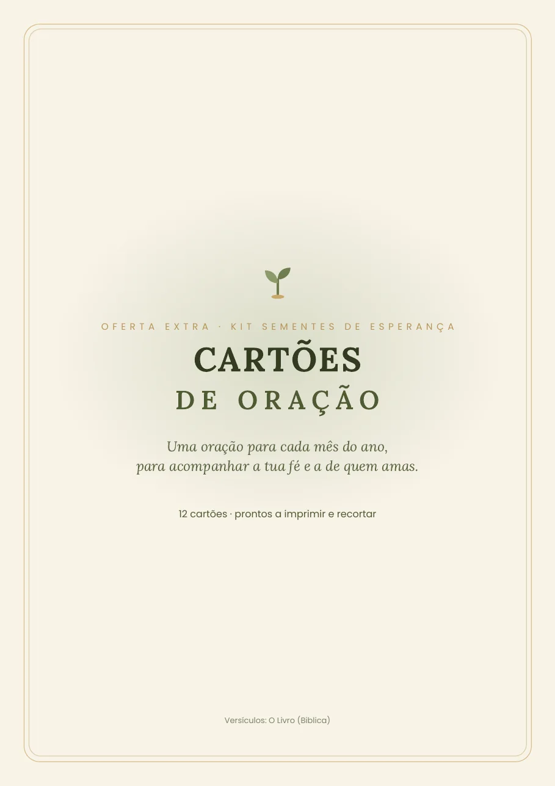
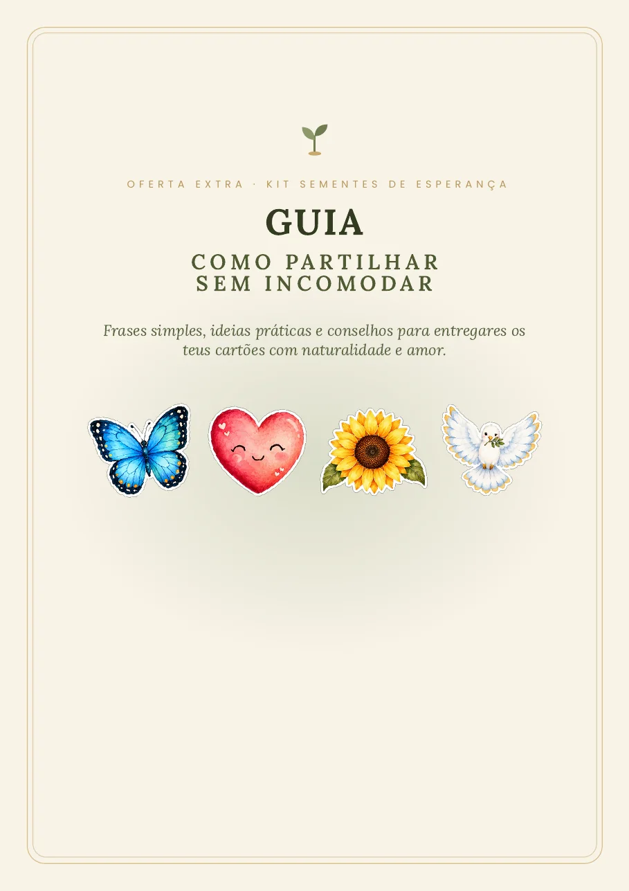
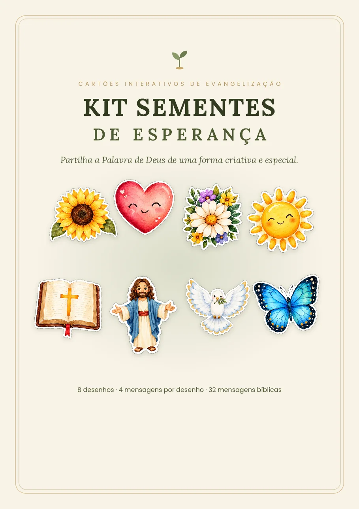
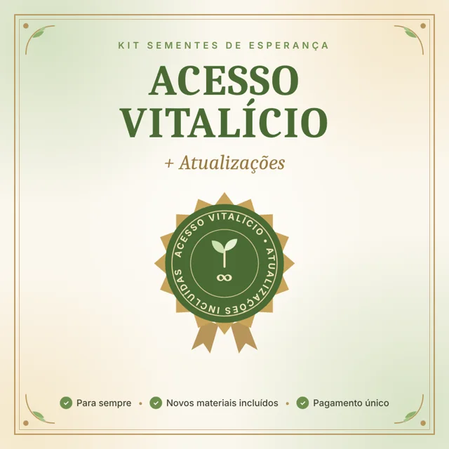

Recebe 32 mensagens bíblicas prontas a imprimir, dobrar e oferecer
Cartões que se entregam fechados, como uma flor, um coração ou uma borboleta, e que se abrem numa mensagem de esperança.
Levanta o olhar.
Quando não sabes para onde ir, olha para cima.
“Levanto os olhos para as altas montanhas: Donde me virá o socorro? O socorro virá do SENHOR, que é o Criador dos céus e da Terra.”
SALMOS 121:1-2 · O LIVRO
Cartão do girassol aberto: Levanta o olhar. Salmos 121:1-2.
Gostaste da ideia? Estas são as dúvidas mais comuns
Não sou pastor nem líder da igreja…
Não é preciso. Mães, avós, jovens e qualquer pessoa que queira partilhar esperança pode usá-los.
Nunca falei de Jesus a desconhecidos…
Não precisas de experiência. O cartão fala por ti, e o guia incluído dá-te frases simples para o entregares com naturalidade.
Não tenho muito tempo…
Imprimes, recortas e dobras em poucos minutos. Podes montar vários numa tarde, ao teu ritmo.
Não tenho jeito para trabalhos manuais…
Os desenhos já estão feitos. Basta seguir as linhas: contínua para recortar, tracejada para dobrar.
Preciso de uma impressora especial?
Não. Serve a impressora de casa ou a de uma papelaria, em papel A4. Em cartolina fina ficam ainda mais bonitos.
Mensagens bonitas, prontas a imprimir. E muita gente à espera de uma palavra de ânimo
Cada cartão entrega-se fechado. Ao abri-lo, a pessoa encontra uma mensagem de esperança e um versículo da Bíblia.
- Famílias
- Igrejas
- Células e grupos
- Evangelização na rua
- Acolhimento de visitantes
- Encontros de jovens e de mulheres
- Crianças
- Visitas a hospitais e lares
Serve o ano inteiro
Datas especiais, visitas, domingos de boas-vindas e saídas em grupo: há sempre uma ocasião para oferecer um cartão.
Imprime as vezes que quiseres
Compras uma vez e usas com a tua família, o teu grupo e a tua igreja, sempre que precisares.
Para miúdos e graúdos
Mensagens simples que uma criança entende e que animam um adulto. Os mais pequenos podem ajudar a recortar e montar.
Um ano de sementes: 8 desenhos para cada ocasião
Cada desenho tem um tema. Escolher o certo faz com que a mensagem chegue mesmo ao coração.
- Janeiro
Ano Novo
Borboleta: para quem quer recomeçar.
- Fevereiro
Amor e amizade
Coração: para quem se sente só ou sem valor.
- Março · abril
Páscoa
Jesus: para quem está longe de Deus ou nunca O conheceu.
- Maio
Dia da Mãe
Flores: vida e esperança para uma nova etapa.
- Setembro
Regresso às aulas
Sol: luz para o caminho de cada dia.
- Outubro
Dias de outono
Girassol: para levantar o olhar e recuperar a alegria.
- Todos os domingos
Boas-vindas
Bíblia: para quem procura respostas e direção.
- Dezembro
Natal
Pomba: paz e descanso para um coração preocupado.
Quatro mensagens por desenho, com versículos da Bíblia O Livro.
Preparar material do zero, ou começar hoje
Fazer do zero
- Semanas à procura de versículos e a criar desenhos
- Pagar a um designer ou a uma gráfica
- Poucas ideias para o teu grupo ou a tua igreja
- Chegar ao encontro de mãos vazias
Com o Kit Sementes de Esperança
- 8 desenhos e 32 mensagens prontos desde o primeiro dia
- Versículos já escolhidos por tema
- Instruções passo a passo para os montar
- Começas a partilhar no mesmo dia
E para partilhares com mais confiança: 2 ofertas incluídas

Cartões de Oração
12 cartões, uma oração para cada mês do ano: pela família, pela saúde, pelos filhos, em tempos de ansiedade e muito mais. Prontos a imprimir e recortar.

Guia: Como partilhar sem incomodar
Frases simples para a rua, o trabalho, a escola ou o hospital, que desenho entregar a cada pessoa e ideias para usar os cartões em grupo.

Kit Sementes de Esperança completo
Pagamento único. Sem mensalidades.
- 8 desenhos · 32 mensagens bíblicas em cartões que se abrem
- Instruções para imprimir, recortar e dobrar
- Oferta: 12 Cartões de Oração
- Oferta: Guia Como partilhar sem incomodar
- Acesso por e-mail assim que o pagamento é confirmado
- Imprime quantas vezes quiseres para uso pessoal, familiar e na igreja

Opcional no checkout: Acesso Vitalício + Atualizações. Guarda o kit para sempre e recebe os novos materiais que forem lançados.
Ficou alguma pergunta?
Para que idades serve?
Para miúdos e graúdos. As mensagens são curtas e simples, por isso funcionam com crianças e também para animar um adulto. Os mais pequenos podem ajudar a recortar e montar os cartões.
Posso imprimi-los várias vezes?
Sim, todas as que quiseres, para uso pessoal, familiar, na igreja e para evangelizar. Só não é permitido revender ou partilhar os ficheiros digitais.
Que versão da Bíblia usam?
Todos os versículos são da Bíblia O Livro (Biblica), com o respetivo crédito.
Como pago?
No checkout seguro da Hotmart, onde vês as formas de pagamento disponíveis para Portugal.
Como recebo o kit?
Assim que o pagamento é confirmado, a Hotmart envia-te por e-mail o acesso aos ficheiros, prontos a descarregar e imprimir. Se não o encontrares, vê também a pasta de spam ou de promoções.
Tem mensalidade?
Não. É um pagamento único de 14,90 €.
Posso pedir reembolso?
Sim, dentro do prazo de garantia indicado no checkout, diretamente pela Hotmart.
O teu próximo cartão pode mudar o dia de alguém
Começa hoje com 32 mensagens prontas a imprimir e duas ofertas para partilhares com confiança.
Quero o meu kit por 14,90 €